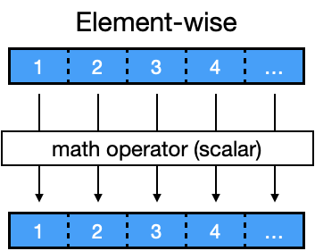
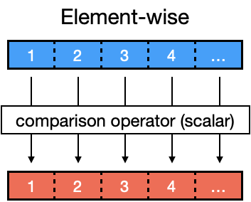
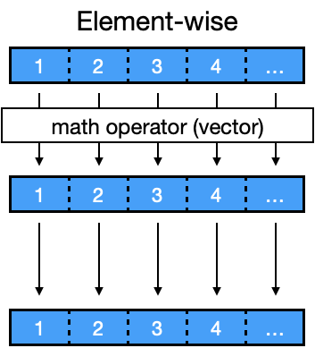
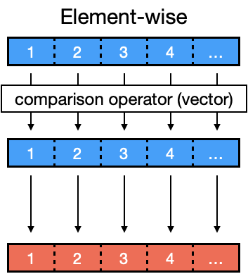

Operations#
Using the analogy of the recipe, we can see that the data in the variable [n] can be used and manipulated using different operations
comparing whether [
n] exceeds a certain value (capacity of bowl)reducing the number of [
n]

In a program, we can perform operations on data in a few ways
Mathemematicalcalculations (e.g. +,-,/,*)Comparisonoperations (e.g. <,==,>)Booleanoperations (e.g. AND, OR)
Furthermore, these operations can be performed on single values or multiple values in a vector
Operations on single values#
1. Mathematical operators#
Mathematical operations can be performed on numeric/integer data
a <- 1
b <- 2
a + b # addition
a - b # subtraction
a * b # multiplication
a / b # division
a ^ b # power
a %% b # modulo (remainder)
2. Comparison operators#
Comparisons can be done between numeric/integer data
a <- 1
b <- 2
a == b # equal to
a != b # not equal to
a > b # greater than
a >= b # greater than or equal to
a < b # less than
a <= b # less than or equal to
We can also use these operators to compare strings/characters
a <- "patient_1"
b <- "patient_2"
a == b # strings are the same
a != b # strings are not the same
3. Boolean operators#
We can apply Boolean operations on logical data types
a <- TRUE
b <- FALSE
a & b # AND
a | b # OR
!a # NOT
Operations on multiple values in vectors#
1. Mathematical operations with a scalar value#

We can perform apply a mathematical calculation on each element of a vector with a single(scalar) value
vector_a <- c(10,20,30,40)
vector_a + 2
vector_a - 2
vector_a * 2
vector_a / 2
vector_a ^ 2
vector_a %% 2
- 12
- 22
- 32
- 42
- 8
- 18
- 28
- 38
- 20
- 40
- 60
- 80
- 5
- 10
- 15
- 20
- 100
- 400
- 900
- 1600
- 0
- 0
- 0
- 0
2. Comparison operations with a scalar value#

We can perform compare each element in a vector with a single(scalar) value
vector_a <- c(10,20,30,40)
vector_a == 20
vector_a != 20
vector_a >= 20
vector_a > 20
vector_a < 20
vector_a <= 20
- FALSE
- TRUE
- FALSE
- FALSE
- TRUE
- FALSE
- TRUE
- TRUE
- FALSE
- TRUE
- TRUE
- TRUE
- FALSE
- FALSE
- TRUE
- TRUE
- TRUE
- FALSE
- FALSE
- FALSE
- TRUE
- TRUE
- FALSE
- FALSE
3. Mathematical operations with another vector#

We can also perform mathematical calculations each element in one vector with the corresponding element in another vector
vector_a <- c(10,20,30,40)
vector_b <- c(1,2,3,4)
vector_a + vector_b
vector_a - vector_b
vector_a * vector_b
vector_a / vector_b
vector_a ^ vector_b
vector_a %% vector_b
- 11
- 22
- 33
- 44
- 9
- 18
- 27
- 36
- 10
- 40
- 90
- 160
- 10
- 10
- 10
- 10
- 10
- 400
- 27000
- 2560000
- 0
- 0
- 0
- 0
4. Comparison operations with another vector#

We can also perform comparisons of each element in one vector with the corresponding element in another vector
vector_a <- c(10,20,30,40)
vector_b <- c(1,2,3,4)
vector_a == vector_b
vector_a != vector_b
vector_a >= vector_b
vector_a > vector_b
vector_a < vector_b
vector_a <= vector_b
- FALSE
- FALSE
- FALSE
- FALSE
- TRUE
- TRUE
- TRUE
- TRUE
- TRUE
- TRUE
- TRUE
- TRUE
- TRUE
- TRUE
- TRUE
- TRUE
- FALSE
- FALSE
- FALSE
- FALSE
- FALSE
- FALSE
- FALSE
- FALSE
Using comparison operations for selecting items#
Now that we can do comparisons, the boolean output TRUE FALSE can be used to select elements from a data structure
Instead of using the index or name within the
[]selector, we can use the results of a comparison for selection based on comparisons
1. Vector#
vector_a <- c(10,20,30,40)
vector_a %% 4 == 0 # test if divisible by 4
- FALSE
- TRUE
- FALSE
- TRUE
If we want to get the values that test TRUE for the comparison, we pass the vector of results from the comparison to the [] selector
vector_a[c(F,T,F,T)]
- 20
- 40
Thus, to obtain the values of a comparison, we combine both the comparison operation and the [] selector
vector_a[vector_a %% 4 == 0] # use the result to select elements that meet this criteria
- 20
- 40
2. Data Frame#
this_is_a_df <- data.frame(id=c(20201,20205,20212,20213,20216),
age=c(19,45, 23, 55, 65),
name=c("Alice","Bob","Charlie","David", "Eliza"),
risk=c("low", "med", "high", "high","med"))
this_is_a_df
| id | age | name | risk |
|---|---|---|---|
| <dbl> | <dbl> | <chr> | <chr> |
| 20201 | 19 | Alice | low |
| 20205 | 45 | Bob | med |
| 20212 | 23 | Charlie | high |
| 20213 | 55 | David | high |
| 20216 | 65 | Eliza | med |
We can select the column containing the values of interest using the $ selector. This will return a vector that we can compare with a value
For example, we wish to compare the values in the
agecolumn to45as a cut-off
this_is_a_df$age > 45 # check if age > 45
- FALSE
- FALSE
- FALSE
- TRUE
- TRUE
To obtain the rows in the data frame that return TRUE for the comparison, we combine the comparison operation with a row selector
data_frame[comparison_operation, ]
this_is_a_df[this_is_a_df$age > 45,] # use the result to select rows that meet this criteria
| id | age | name | risk | |
|---|---|---|---|---|
| <dbl> | <dbl> | <chr> | <chr> | |
| 4 | 20213 | 55 | David | high |
| 5 | 20216 | 65 | Eliza | med |
Operations on factors for ordered categories#
Factors can be used for comparison of different categories that have an order (e.g. low, med, high risks)
To do this, 2 parameters need to be specified in the factor function
levelsoption with a vector of the categories in order desired (left to right)orderedoption set toTRUE
1. Vector#
vector_c <- c("low", "med", "high", "high") # vector of strings
vector_c
- 'low'
- 'med'
- 'high'
- 'high'
We can try applying a comparison operator to this vector of characters representing the different categories
For example, we will try to find elements that have a risk greater than medium
vector_c > "med" # no meaningful comparison
- FALSE
- FALSE
- FALSE
- FALSE
In this case, we have not converted the vector to ordered factors to represent the categories in the proper order (low, med, high)
We can do this by applying the factor function to the vector and include 2 parameters
levelsoption to specify the order of the categoriesorderedoption to TRUE
# convert to ordered factors for categories
vector_c <- factor(vector_c,
levels = c("low", "med", "high"),
ordered=TRUE)
vector_c
- low
- med
- high
- high
Levels:
- 'low'
- 'med'
- 'high'
Now that we have ordered factors, we can apply the same comparison operation to identify elements in the vector that are greater than medium risk
vector_c > "med"
- FALSE
- FALSE
- TRUE
- TRUE
Combining the comparison operation with the [] selector with give us the values
vector_c[vector_c > "med"]
- high
- high
Levels:
- 'low'
- 'med'
- 'high'
2. Data Frame#
We can use the same concept to select rows in a data frame based on comparisons of a categorical data in a column
For example, we would like to select the patients who have risk greater than med
this_is_a_df <- data.frame(id=c(20201,20205,20212,20213,20216),
age=c(19,45, 23, 55, 65),
name=c("Alice","Bob","Charlie","David", "Eliza"),
risk=c("low", "med", "high", "high","med"))
this_is_a_df
| id | age | name | risk |
|---|---|---|---|
| <dbl> | <dbl> | <chr> | <chr> |
| 20201 | 19 | Alice | low |
| 20205 | 45 | Bob | med |
| 20212 | 23 | Charlie | high |
| 20213 | 55 | David | high |
| 20216 | 65 | Eliza | med |
The risk column is of character data type and needs to be converted to an ordered factor type so that comparisons can be made
To do this, we use the
factorfunction on theriskcolumn withlevels(low, med, high) andordered=TRUEparameters.By assigning the results to the
riskcolumn, we convert this column from acharacterdata type intoordered factors
this_is_a_df$risk <- factor(this_is_a_df$risk,
levels = c("low", "med", "high"),
ordered = TRUE)
When we print the data frame, we can see this conversion reflected in the column as <ord>
this_is_a_df
| id | age | name | risk |
|---|---|---|---|
| <dbl> | <dbl> | <chr> | <ord> |
| 20201 | 19 | Alice | low |
| 20205 | 45 | Bob | med |
| 20212 | 23 | Charlie | high |
| 20213 | 55 | David | high |
| 20216 | 65 | Eliza | med |
We can perform the comparison on the risk column to identify rows that have risk greater than medium
this_is_a_df$risk > "med"
- FALSE
- FALSE
- TRUE
- TRUE
- FALSE
To obtain the rows in the data frame that return TRUE for the comparison, we combine the comparison operation with a row selector
data_frame[comparison_operation, ]
this_is_a_df[this_is_a_df$risk > "med",] # select rows that meet the risk critera > "med"
| id | age | name | risk | |
|---|---|---|---|---|
| <dbl> | <dbl> | <chr> | <ord> | |
| 3 | 20212 | 23 | Charlie | high |
| 4 | 20213 | 55 | David | high |
Summary#
Operations can be performed on data in several ways
Mathematical (
+,-,/,*,^,%%)Comparison (
<,<=,==.!=,>=,>)Boolean (
&,|,!)
Operations can be done on single values or multiple values in a vector
Comparison operations can be combined with selectors
[]to select elements from data structure depending on the conditionvector[conditional statement]dataframe[conditional statement,]for selecting rows
Comparison operations can be used to select a range of categories
They need to converted to an ordered factor before comparison operations can be done
For example:
data <- factor(data, levels=vector of categories, ordered=TRUE)
Exercise - Operations#
this_is_a_df <- data.frame(id=c(20201,20205,20212,20213,20216),
age=c(19,45, 23, 55, 65),
name=c("Alice","Bob","Charlie","David", "Eliza"),
risk=c("low", "med", "high", "high","med"))
this_is_a_df
| id | age | name | risk |
|---|---|---|---|
| <dbl> | <dbl> | <chr> | <chr> |
| 20201 | 19 | Alice | low |
| 20205 | 45 | Bob | med |
| 20212 | 23 | Charlie | high |
| 20213 | 55 | David | high |
| 20216 | 65 | Eliza | med |
Part 1#
Select patients with high risk, then return a vector of their ages
# start here
Show code cell content
# solution
this_is_a_df[this_is_a_df$risk=="high",]$age
- 23
- 55
Part 2#
Select patients with ages greater than or equal to 55, return the risk as a vector and tabulate their counts
# start here
Show code cell content
# solution
table(this_is_a_df[this_is_a_df$age >= 55,]$risk)
high med
1 1